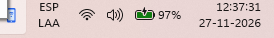

Espejo CelularApp gratuita para Windows
Botones junto al espejo y la app siempre a mano junto al reloj.
Una barra pegada a la ventana del celular.
La X esconde la ventana. Con clic derecho en el ícono están todas las opciones, y puede abrirse sola al iniciar Windows.
